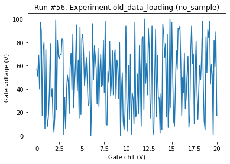
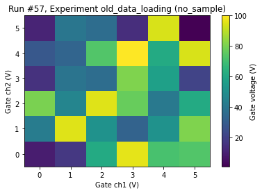

This page was generated from
docs/examples/DataSet/import-data-from-legacy-dat-files.ipynb.
Interactive online version:
 .
.
Importing data from legacy .dat files
This notebook shows you how you can import data from a legacy dataset generated with the old qcodes.data dataset. These are typically generated with qcodes.loops.Loop or qcodes.measure.Measure.
[1]:
%matplotlib inline
import qcodes as qc
from qcodes.dataset.legacy_import import import_dat_file
from qcodes import initialise_database
from qcodes import load_or_create_experiment
from qcodes.dataset.measurements import Measurement
from qcodes.dataset.plotting import plot_by_id
from qcodes.dataset.data_set import load_by_id
import numpy as np
Logging hadn't been started.
Activating auto-logging. Current session state plus future input saved.
Filename : /home/runner/.qcodes/logs/command_history.log
Mode : append
Output logging : True
Raw input log : False
Timestamping : True
State : active
Qcodes Logfile : /home/runner/.qcodes/logs/211123-8166-qcodes.log
[2]:
# in case it was not there already
initialise_database()
# put the old data in a new experiment
exp = load_or_create_experiment('old_data_loading', sample_name='no_sample')
[3]:
location2d = '../../../qcodes/tests/dataset/fixtures/2018-01-17/#002_2D_test_15-43-14'
location1d = '../../../qcodes/tests/dataset/fixtures/2018-01-17/#001_testsweep_15-42-57'
[4]:
run_ids = import_dat_file(location1d, exp=exp)
axs, cbaxs = plot_by_id(run_ids[0])
Starting experimental run with id: 56.

[5]:
run_ids = import_dat_file(location2d, exp=exp)
axs, cbaxs = plot_by_id(run_ids[0])
Starting experimental run with id: 57.

[ ]: